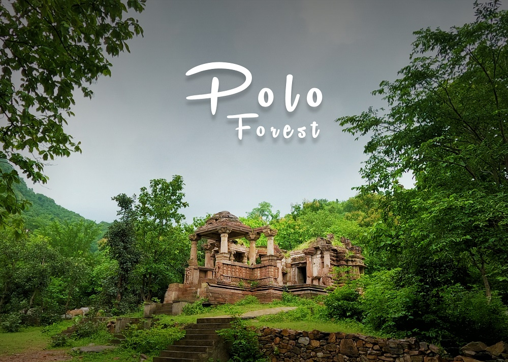

The ancient Polo city was built around the river Harnav, an ancient water body spoken of in the Puranas.
It is believed to have been established in the 10th century by the Parihar kings of Idar,
and was then conquered in the 15th century by the Rathod Rajputs of Marwar. The name is derived from pol,
the Marwari word for "gate," signifying its status as a gateway between Gujarat and Rajasthan.
It was built between Kalaliyo in the east, the highest peak in the area, and Mamrehchi in the west,
considered sacred by the local adivasis. Together they block sunlight for most of the day
, which might provide an explanation for the otherwise mysterious abandonment of the ancient city.